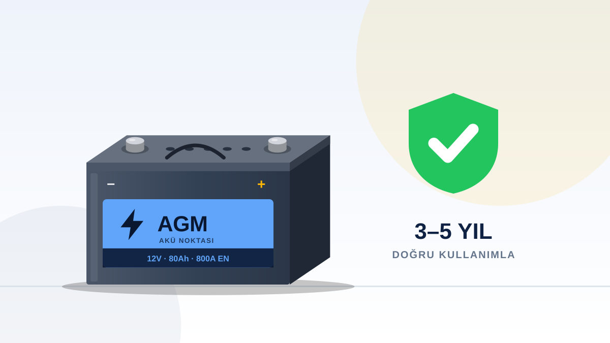

Bir otomobil aküsü doğru kullanıldığında ortalama üç ile beş yıl arasında sorunsuz hizmet verir. Ancak bu süre; sürüş alışkanlıklarınıza, aracın elektrik yüküne ve bakım düzeninize göre ciddi biçimde kısalabilir ya da uzayabilir. Sahada her gün akü testi yapan ekibimizin gördüğü gerçek şu: akülerin büyük bölümü yaşlılıktan değil, ihmalden ölüyor.
1. Kısa mesafeli sürüşleri azaltın
Marş anında aküden çekilen enerji, ancak belirli bir sürüş süresinde şarj dinamosu tarafından geri yüklenir. Sürekli beş on dakikalık kısa yolculuklar yapıyorsanız aküniz hiçbir zaman tam dolmaz. Haftada en az bir kez yarım saatlik kesintisiz bir sürüş, aküyü dengelemenin en kolay yoludur.
2. Kutup başlarını temiz tutun
Akü kutuplarında oluşan beyaz-yeşil oksit tabakası akım geçişini zayıflatır. Kutup başlarını yılda birkaç kez kontrol ettirmek ve gerekirse temizletmek, marş zorlanmalarının önüne geçer.
3. Motor kapalıyken elektrik tüketmeyin
Kontak kapalıyken uzun süre müzik dinlemek ya da farları açık unutmak aküyü derin deşarja sokar. Her derin deşarj, akü plakalarında kalıcı bir iz bırakır.
4. Uzun beklemelerde önlem alın
İki haftadan uzun süre kullanılmayacak araçlarda akü bağlantısını sökmek ya da akıllı bir bakım şarj cihazı kullanmak gerekir.
5. Aküyü sabitleyin
Gevşek bağlanmış bir akü, yol sarsıntılarıyla iç plakalarına zarar verir. Bağlantı braketinin sağlam olduğundan emin olun.
6. Şarj sistemini ölçtürün
Fazla şarj da düşük şarj kadar zararlıdır. Arızalı bir konjektör aküyü kaynatabilir. Periyodik bakımlarda şarj voltajını mutlaka ölçtürün.
7. Doğru aküyü seçin
Aracınızın üretici değerlerine uygun amper, soğuk marş gücü ve teknoloji seçimi uzun ömrün temelidir. Bu konuda akü amper tablomuza göz atabilirsiniz.
Küçük alışkanlıklar, büyük tasarruf
Bu kuralların hiçbiri ek masraf gerektirmez; yalnızca biraz dikkat ister. Oysa erken biten bir akü, beklenmedik bir yol yardımı ücreti, iş günü kaybı ve gereksiz parça değişimi anlamına gelebilir. Yılda bir kez yaptırılacak basit bir akü testi, bu risklerin neredeyse tamamını ortadan kaldırır ve size aküyü değiştirmek için doğru zamanı söyler.
Akü Noktası Balıkesir olarak aküyü yalnızca değiştirmiyor, ölçüyor ve gerçek durumunu size açıkça anlatıyoruz. Akünüzden şüpheleniyorsanız günün her saati bize ulaşabilirsiniz.